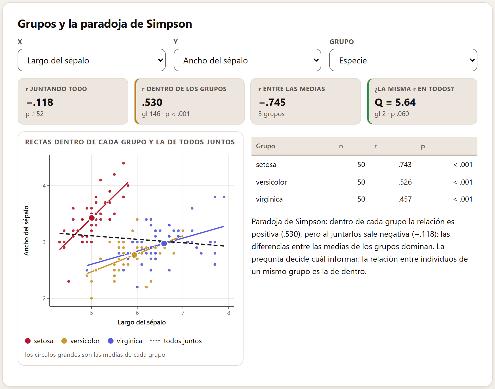
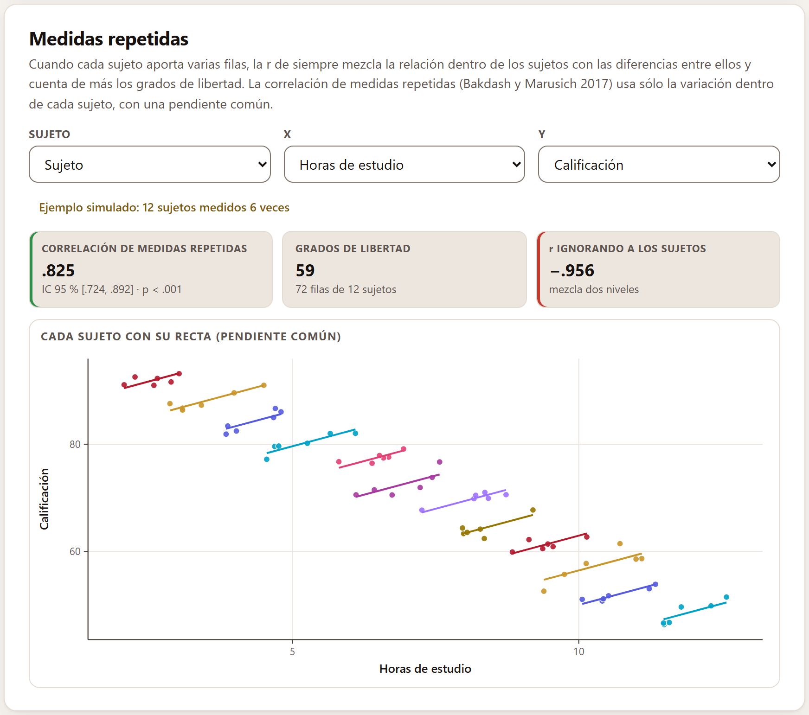
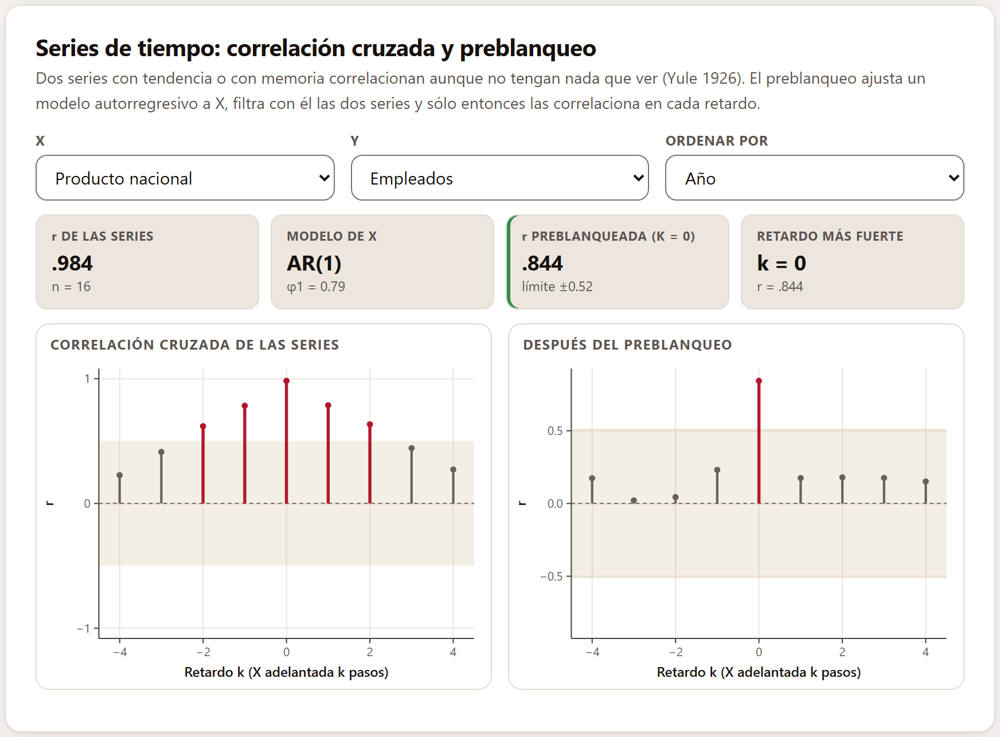
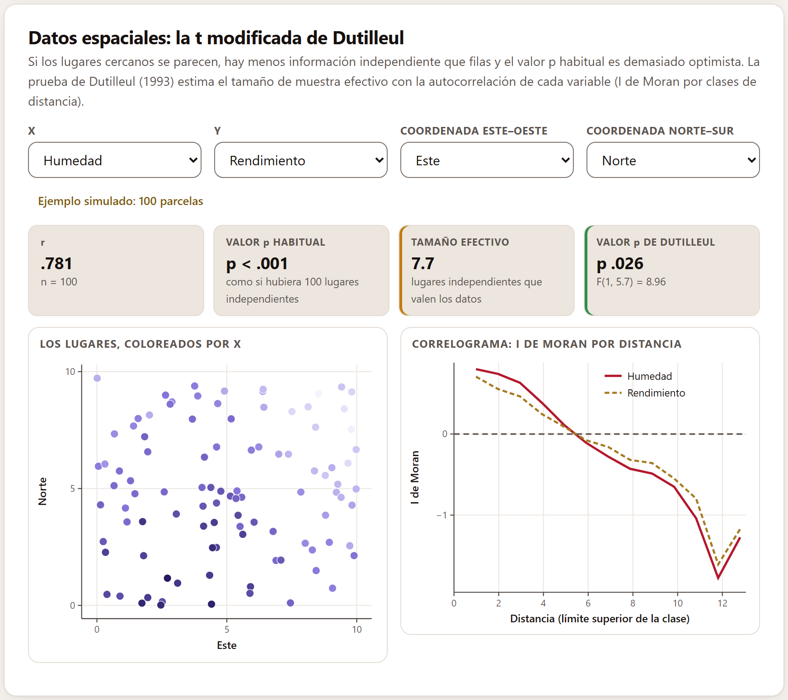
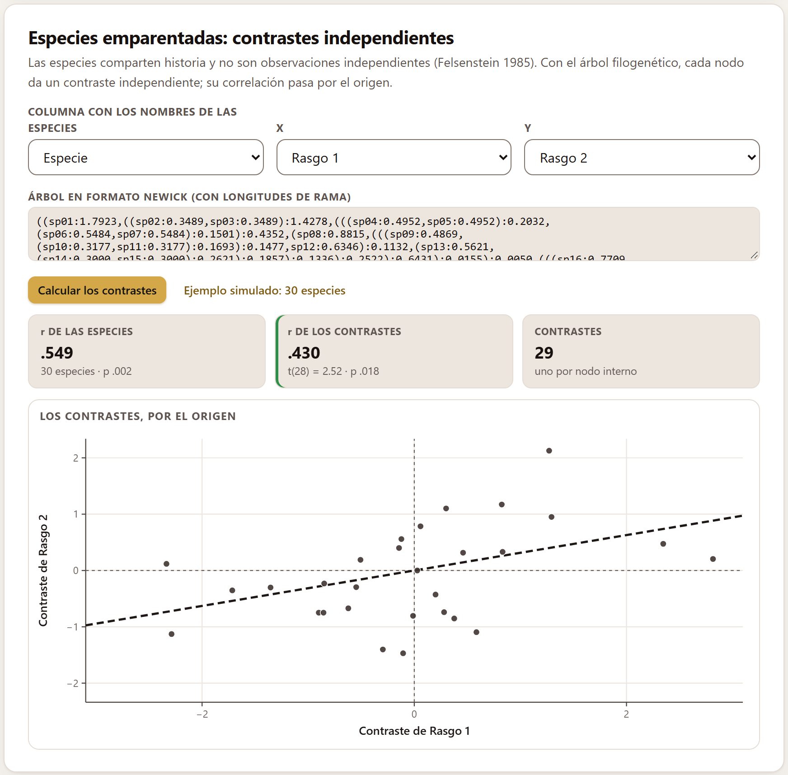
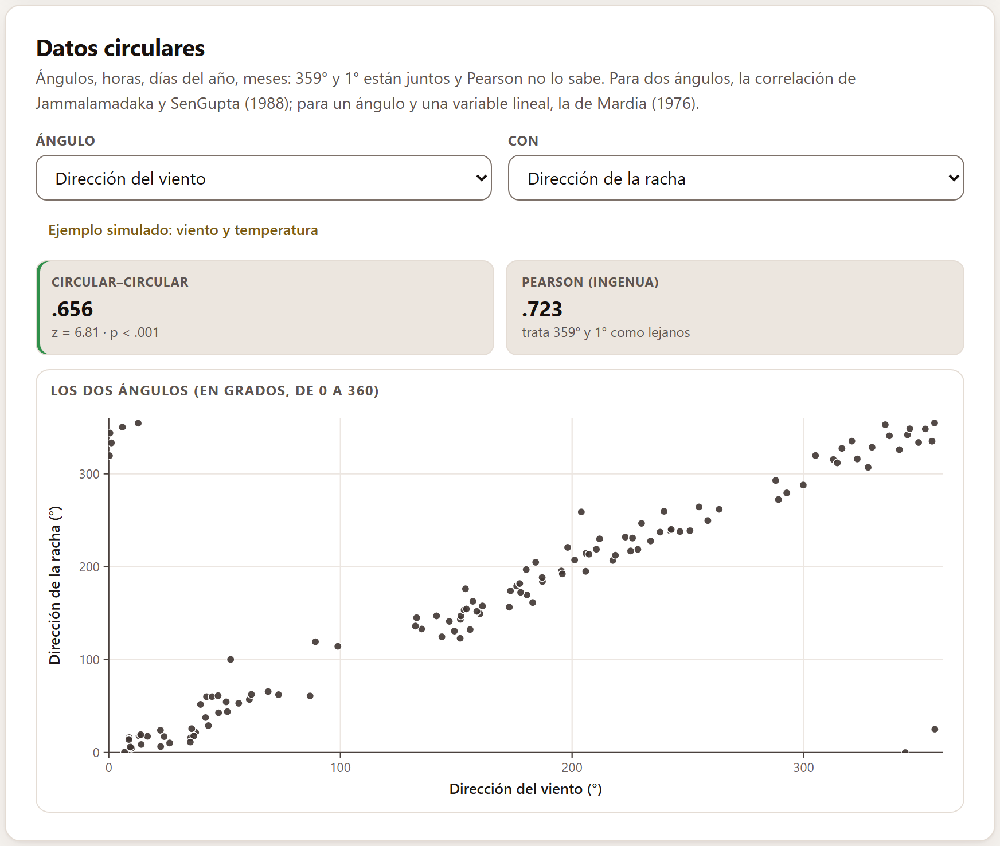
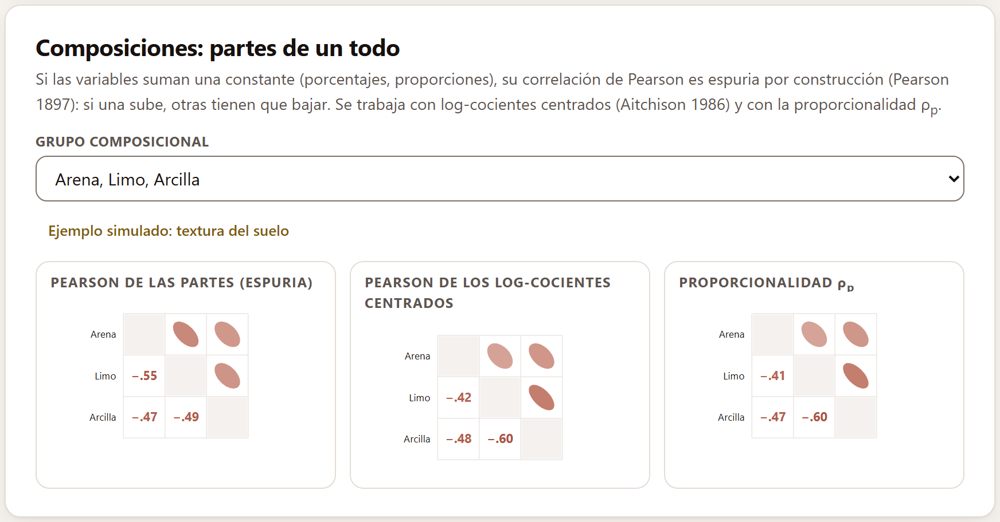

La prueba de la r de Pearson supone filas independientes. Muchos datos no lo son: casos agrupados, sujetos medidos varias veces, años seguidos, parcelas vecinas, especies emparentadas. Y algunos números no son una recta: los ángulos dan la vuelta y los porcentajes suman cien. Este bloque reúne siete herramientas, una para cada uno de esos casos.
Cada tarjeta tiene sus propios menús, y casi todas un botón de ejemplo simulado: no hay conjuntos de dominio público para todos los casos, así que la app genera unos datos con la estructura justa para ver la herramienta. Al cargarlos, el título y un mensaje dicen que son simulados y no reales. Al cargar un ejemplo se reemplazan los datos abiertos; para volver a los tuyos, ábrelos de nuevo en el Bloque 2.
Cuando los casos vienen de grupos distintos, hay tres correlaciones, no una: la de dentro de los grupos, la de entre sus medias y la de juntar todo, que mezcla las otras dos.
Se eligen X, Y y el Grupo. Cuatro cifras: la r juntando todo; la r dentro de los grupos, calculada con los datos centrados en las medias de su grupo, con n − K − 1 grados de libertad; la r entre las medias de los K grupos, y la prueba Q de que todos los grupos tienen la misma r (con la z de Fisher).

La tabla da la r de cada grupo. La lectura avisa de la paradoja de Simpson cuando la relación dentro de los grupos tiene el signo contrario a la de juntar todo, y si no, recuerda que la r de todos juntos no describe a ninguno de los dos niveles cuando éstos se parecen poco.
Si la pregunta es sobre individuos —¿las flores de sépalo más largo lo tienen más ancho?—, la respuesta es la r de dentro. Si es sobre los grupos —¿las especies de sépalo más largo lo tienen más ancho?—, es la de entre las medias, con K casos, no con n. Sacar conclusiones sobre individuos con la correlación de los grupos es la falacia ecológica (Robinson 1950).
Cuando cada sujeto aporta varias filas, la r de siempre mezcla la relación dentro de los sujetos con las diferencias entre ellos, y además cuenta los grados de libertad como si cada fila fuera un sujeto nuevo. La correlación de medidas repetidas (Bakdash y Marusich 2017) usa sólo la variación dentro de cada sujeto, con una pendiente común para todos, y tiene N − k − 1 grados de libertad, con N filas y k sujetos.
Se eligen la columna del Sujeto —la que tenga papel de sujeto en el Bloque 2, o cualquiera con valores repetidos— y las dos variables. Las cifras son la correlación con su intervalo, los grados de libertad y la r ignorando a los sujetos, en rojo si tiene el signo contrario. La gráfica pone cada sujeto con su color y su recta, todas con la misma pendiente.

Dos series con tendencia o con memoria correlacionan aunque no tengan nada que ver: es la «correlación sin sentido» de Yule (1926). El preblanqueo (Box y Jenkins 1976) ajusta a X un modelo autorregresivo —el orden lo elige el criterio de Akaike—, filtra con él las dos series y sólo entonces las correlaciona, en cada retardo.
Se eligen X, Y y la columna por la que Ordenar por (si hay una con papel de tiempo, queda elegida; si no, el orden de las filas). Hacen falta al menos 12 tiempos. Las cifras son la r de las series, el modelo de X con sus coeficientes φ, la r preblanqueada en el retardo cero con su límite y el retardo más fuerte. Las dos gráficas dan la correlación en cada retardo k —con X adelantada k pasos—, antes y después del preblanqueo; la franja es el límite aproximado de ±2/√n, y las barras que lo pasan van en rojo.

Si los lugares cercanos se parecen, hay menos información independiente que filas, y el valor p habitual es demasiado optimista. La prueba de Dutilleul (1993), que sigue a Clifford, Richardson y Hémon (1989), estima con la autocorrelación de cada variable —la I de Moran por clases de distancia— el tamaño de muestra efectivo: cuántos lugares independientes valen los datos.
Se eligen las dos variables y las dos coordenadas (si hay columnas con papel de coordenada, quedan elegidas). Las cifras son r, el valor p habitual, el tamaño efectivo (en ámbar si es menos de la mitad de los lugares) y el valor p de Dutilleul con su F. Se calcula hasta con 1 500 lugares. El mapa colorea los lugares por X; el correlograma da la I de Moran de cada variable por distancia: si empieza alta y baja, los lugares cercanos se parecen.

Las especies comparten historia evolutiva: dos especies hermanas se parecen porque vienen del mismo antepasado, no porque sean dos observaciones independientes (Felsenstein 1985). Con el árbol filogenético, cada nodo interno da un contraste independiente: la diferencia entre sus dos ramas, estandarizada por la longitud de las ramas. La correlación de los contrastes, que pasa por el origen (Garland, Harvey e Ives 1992), es la que se prueba.
Se elige la Columna con los nombres de las especies, las dos variables y se pega el árbol en formato Newick, con longitudes de rama, en el recuadro; Calcular los contrastes hace la cuenta. Los nombres del árbol deben coincidir exactamente con los de la columna; si falta alguno, un mensaje dice cuáles.

Ángulos, horas, días del año, meses: 359° y 1° están juntos, y Pearson no lo sabe. Para dos ángulos, la correlación circular–circular de Jammalamadaka y SenGupta (1988), con su prueba z; para un ángulo y una variable lineal, la circular–lineal de Mardia (1976), que ajusta a la variable una onda de seno y coseno del ángulo. Al lado, la r de Pearson «ingenua», para ver cuánto se equivoca.
El menú Ángulo ofrece las columnas de tipo circular del Bloque 2, con su unidad (grados, radianes, horas, día del año o mes); Con, otra circular o una continua.

Con la temperatura en Con, el mismo ejemplo da la correlación circular–lineal: la temperatura sigue la dirección del viento con una onda, más alta cuando el viento viene de unos 210°. La gráfica pone la variable lineal frente al ángulo, con la onda ajustada.
Si las variables suman una constante —porcentajes, proporciones—, su correlación de Pearson es espuria por construcción (Pearson 1897): si una sube, otras tienen que bajar, y la media de las correlaciones tiende a ser negativa aunque las partes no se relacionen. Se trabaja con los log-cocientes centrados (Aitchison 1986) y con la proporcionalidad ρp (Lovell y colaboradores 2015; Erb y Notredame 2016).
El Bloque 2 detecta solo los grupos de columnas contiguas que suman una constante en cada fila; el menú Grupo composicional los ofrece. Las tres matrices comparan la Pearson de las partes, la Pearson de los log-cocientes centrados y la proporcionalidad.

Dos partes son proporcionales si su cociente es casi constante de una muestra a otra. Con a y b los log-cocientes centrados de dos partes, ρp = 1 − var(a − b)/(var(a) + var(b)); vale 1 con proporcionalidad perfecta, y como a − b es el logaritmo del cociente de las dos partes, no depende de cómo se cerró la composición. Con sólo tres partes, ninguna medida escapa del todo al cierre: con más partes, los log-cocientes centrados se acercan a lo que cada parte hace por sí misma.
| Si hay grupos… | informa la r de dentro o la de entre, según la pregunta; nunca sólo la de juntar todo. |
| Si cada sujeto aporta varias filas… | usa la correlación de medidas repetidas, con N − k − 1 grados de libertad. |
| Si los datos son series de tiempo… | preblanquea antes de concluir; una r alta entre dos tendencias no dice nada. |
| Si los lugares cercanos se parecen… | informa el tamaño efectivo y el valor p de Dutilleul. |
| Si los casos son especies… | usa los contrastes independientes con un árbol publicado. |
| Si una variable es un ángulo o las partes suman 100… | usa la correlación circular o los log-cocientes; Pearson engaña por construcción. |
Son guías para interpretar, no leyes: lo que sabes del fenómeno, del diseño y de cómo se midió siempre manda.